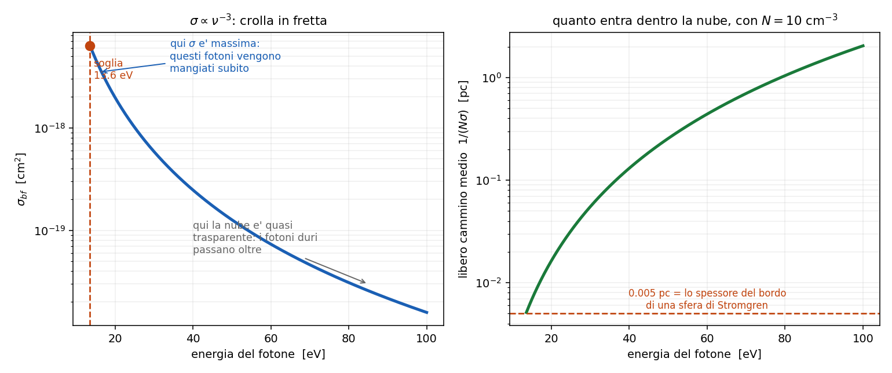

7 - Sezione d' urto ed equilibrio di ionizzazione
Dispensa: cap. 7 (pag. 93-98).
Prima meta' a mattoncini (la sezione d' urto e' uno strumento, e va costruito prima di
usarlo), seconda meta' in PODS: si scrive il bilancio completo e poi si butta via meta'
dei termini, ma spiegando ogni volta perche' si puo' fare.
Questo capitolo risponde alla domanda:
in una nebulosa, quanto idrogeno e' ionizzato e quanto e' ancora neutro?
Nel capitolo 2 la risposta la dava Saha. Qui Saha non si puo' usare,
perche' vale in equilibrio termodinamico e in una nebulosa non ci siamo. Il bilancio va fatto a
mano, come nel capitolo 5.
Ma prima serve uno strumento.
1. La sezione d' urto: cos'e'
La sezione d' urto $\sigma$ e' l' area efficace del bersaglio: quanto e' probabile che
l' interazione avvenga, tradotta in centimetri quadri.
L' immagine da tenere: io fotone (o io elettrone) arrivo addosso a una nube. Ogni bersaglio si
porta dietro un dischetto di area $\sigma$. Se ci finisco dentro succede qualcosa, se ci passo
di fianco tiro dritto.
SIGNIFICATO FISICO: $\sigma$ si misura in cm$^2$ ma non e' la taglia geometrica
dell' atomo. E' quanto quell' atomo e' "grosso" per quel processo li'. Lo stesso atomo ha
$\sigma$ diverse per processi diversi, e per la fotoionizzazione cambia anche con l' energia del
fotone che arriva.
1.1 Un caso in cui coincide davvero con l' area
Per gli urti fra atomi di idrogeno neutri nel fondamentale si prende proprio il disco di Bohr:
$$\sigma = \pi a_B^2 \simeq 0.88 \times 10^{-16} \; \text{cm}^2$$
$a_B$ $\quad$ raggio di Bohr, $0.53 \times 10^{-8}$ cm
Qui $\sigma$ e' davvero l' area dell' atomo, ma e' un caso particolare: sono due palline che si
urtano. Negli altri casi non e' cosi'.
2. Primo uso della sezione d' urto: opacita'
Se ho $N$ bersagli per cm$^3$ e ognuno mi offre $\sigma$ di area, in un centimetro di cammino
intercetto:
$$k = N \sigma \qquad [\text{cm}^{-1}]$$
ed e' proprio il coefficiente di assorbimento del capitolo 3. Su uno spessore
$L$:
$$\tau = N \sigma L$$
Da cui una lettura molto utile:
$$\tau = 1 \quad \Leftrightarrow \quad L = \frac{1}{N\sigma}$$
$\tau = 1$ vuol dire un' interazione a testa, e $1/(N\sigma)$ e' il libero cammino medio:
la distanza dopo la quale il fotone medio e' stato mangiato.
3. Secondo uso: rate collisionali
Nelle collisioni il bersaglio non sta fermo: ci arrivo addosso a velocita' $v$, e le velocita' sono
maxwelliane. Quindi non basta $\sigma$, serve la media del prodotto:
$$Q = \langle \sigma v \rangle = \int_0^\infty v \, \sigma(v) \, f(v) \, dv \qquad [\text{cm}^3 \text{s}^{-1}]$$
Nota subito così de botto: le unita' lo spiegano da sole. cm$^2$ per cm/s fa cm$^3$/s, cioe'
il volume che il mio dischetto spazza in un secondo. Moltiplicato per la densita' dei partner
da' il numero di urti al secondo: $C = N Q$ in s$^{-1}$.
Questo $Q$ e' esattamente quello che entra nell' atomo a due livelli del
capitolo 5 e nella densita' critica $N_c = A_{21}/Q_{21}$.
Per la diseccitazione collisionale la dispensa arriva a:
$$Q_{nm} = \frac{8.63 \times 10^{-6}}{\sqrt{T_e}} \frac{\langle \Omega(m,n) \rangle}{g_n}$$
$\Omega$ $\quad$ collision strength
Nota che $Q$ dipende solo da $T_e$ (va come $T_e^{-1/2}$): la densita' entra dopo, nel rate.
3.1 Quanto sono rari gli urti, in numeri
Vale la pena vederlo, perche' e' il numero che giustifica tutto il capitolo 5.
Con $T_e = 10^4$ K viene $Q \simeq 10^{-7}$ cm$^3$ s$^{-1}$, e con $N_e = 10^3$ cm$^{-3}$ il rate e'
$C = N_e Q \simeq 10^{-4}$ s$^{-1}$:
una diseccitazione collisionale ogni 2.8 ore.
Con gli atomi neutri nel mezzo interstellare diffuso si scende a un urto ogni 3170 anni.
Adesso e' chiaro perche' una riga proibita, che ci mette secondi o minuti a uscire, fa comodamente
in tempo.
4. Terzo uso: la fotoionizzazione
Qui $\sigma$ dipende dall' energia del fotone:
$$\sigma_{bf} \simeq 2.81 \times 10^{29} \frac{Z^4}{n^5 \nu^3} \qquad [\text{cm}^2]$$
$Z$ $\quad$ carica nucleare efficace
$n$ $\quad$ livello di partenza dell' elettrone
$\nu$ $\quad$ frequenza del fotone
Per l' idrogeno dal fondamentale, alla soglia di 13.6 eV, il valore tabulato e':
$$\sigma \simeq 6.3 \times 10^{-18} \; \text{cm}^2$$
cioe' una quindicina di volte sotto l' area geometrica dell' atomo.
4.1 La dipendenza che conta: $\nu^{-3}$
$$\sigma \propto \nu^{-3}$$
Cala in fretta appena il fotone diventa piu' energetico. Conseguenza fisica diretta:
- i fotoni appena sopra la soglia vengono divorati subito, a pochi passi dentro la nube
- i fotoni molto energetici vedono la nube quasi trasparente e penetrano molto piu' a fondo

Nota subito così de botto: questo e' controintuitivo la prima volta. Verrebbe da pensare che
un fotone piu' energetico ionizzi meglio. Invece no: passa oltre. Ionizzare bene vuol dire avere
l' energia giusta, non tantissima.
5. L' equilibrio di ionizzazione: l' equazione generale
Si scrive che tutto quello che ionizza pareggia tutto quello che ricombina:
$$N_i R_{i,i+1} + N_i C_{i,i+1} = N_{i+1} R_{i+1,i} + N_{i+1} C_{i+1,i}$$
$R_{i,i+1}$ $\quad$ rate di fotoionizzazioni (s$^{-1}$)
$C_{i,i+1}$ $\quad$ rate di ionizzazioni collisionali
$R_{i+1,i}$ $\quad$ rate di ricombinazioni
$C_{i+1,i}$ $\quad$ rate di ricombinazioni collisionali
Quattro termini. Adesso se ne buttano via due, e i motivi sono interessanti.
5.1 Via le ricombinazioni collisionali
$C_{i+1,i}$ e' un processo a tre corpi: servono uno ione, un elettrone che ricombina, e un
terzo corpo che si porti via l' energia in eccesso.
Far incontrare tre cose nello stesso posto richiede densita' alta. In una nebulosa non succede
mai. Si butta.
5.2 Via le ionizzazioni collisionali
Per ionizzare l' idrogeno per urto servono elettroni da 13.6 eV. Facendo il conto con la
maxwelliana, la frazione utile e':
| $T_e$ | $k_B T_e$ | quanto pesa |
|---|---|---|
| $10^4$ K | 0.86 eV | $2 \times 10^{-6}$ |
| $2 \times 10^4$ K | 1.72 eV | $4 \times 10^{-3}$ |
| $4 \times 10^4$ K | 3.44 eV | 0.17 |
| $10^5$ K | 8.61 eV | 1.56 |
Serve $T_e > 10^5$ K perche' la ionizzazione collisionale conti qualcosa. Le nebulose stanno a
$10^4$ K, dieci volte sotto. Si butta anche questa.
Attenzione: guarda quanto e' brusca quella colonna: da $10^4$ a $10^5$ K
cambia di sei ordini di grandezza. E' la firma dell' esponenziale: quando devi raggiungere
un' energia molto sopra $k_BT$, non ci arrivi "un po'", non ci arrivi per niente.
(Un contributo residuo lo danno i raggi cosmici, particelle da 0.3-100 MeV che ionizzano per
urto: $C_{0,1} \sim 10^{-17}$ s$^{-1}$. Piccolo, ma non zero.)
5.3 Quello che resta
$$N_0 R_{0,1} = N_1 R_{1,0}$$
le fotoionizzazioni pareggiano le ricombinazioni.
Cioe': in una nebulosa si ionizza con la luce e si ricombina con gli elettroni. E' tutto qui.
6. Il rate di fotoionizzazione
$$N_0 R_{0,1} = 4\pi \int_{\nu_0}^{\infty} \frac{k_{bf}}{h\nu} I_\nu \, d\nu$$
Si integra da $\nu_0$ in su, la soglia a 13.6 eV: sotto quella frequenza i fotoni non ionizzano
e non contano.
Nel conto entrano due cose:
- $\sigma_{bf} \propto \nu^{-3}$, la sezione d' urto della parte A
- il campo di radiazione della stella, fortemente diluito
6.1 Il fattore di diluizione
Questo e' il pezzo che spiega perche' le nebulose sono quello che sono.
La stella emette come un corpo nero alla sua temperatura, ma la nebulosa e' lontana. Il campo
di radiazione che arriva li' e' lo stesso come forma (stessa distribuzione in frequenza), ma
ridotto in intensita' di un fattore geometrico:
$$w \sim 10^{-15}$$
Sono quindici ordini di grandezza.
Occhio a questo: ecco l' origine di tutto il comportamento non-LTE delle nebulose.
Il gas "vede" una radiazione che ha la forma di un corpo nero a $4 \times 10^4$ K ma
l' intensita' di quasi niente. Quindi non puo' termalizzarsi con quella radiazione, e le
popolazioni dei livelli non hanno nessun motivo di seguire Boltzmann. E' la stessa diluizione che
nel capitolo 5 permetteva di buttare via il termine radiativo
$U B_{12}$.
Il risultato del conto, per una stella a $4 \times 10^4$ K:
$$R_{0,1} \sim 10^{-8} \; \text{s}^{-1}$$
Cioe' un atomo neutro viene fotoionizzato mediamente una volta ogni tre anni.
7. Il rate di ricombinazione
$$R_{1,0} = N_e \alpha, \qquad \alpha = \sum_{n=1}^{\infty} \alpha_n$$
$\alpha_n$ $\quad$ coefficiente di ricombinazione sul livello $n$, in cm$^3$ s$^{-1}$
La somma su tutti gli $n$ c'e' perche' l' elettrone puo' essere catturato su qualsiasi livello.
Ogni $\alpha_n$ si ottiene mediando la sezione d' urto di ricombinazione sulla maxwelliana, ed e' lo
stesso oggetto che nel capitolo 5.5 alimentava la cascata.
L' andamento:
$$\alpha_n \propto \frac{1}{T_e^{3/2} \, n^3}$$
Cala con la temperatura: un elettrone veloce fa piu' fatica a farsi catturare, sfreccia via.
Cala come $1/n^3$: le catture sui livelli bassi sono le piu' probabili.
7.1 Ricombinano gli elettroni lenti
La sezione d' urto di ricombinazione va come $1/v^2$: ricombinano preferenzialmente gli elettroni
lenti, mentre la fotoionizzazione ne libera di veloci.
Conseguenza che serve nel capitolo 9: anche in equilibrio perfetto,
con tante ionizzazioni quante ricombinazioni, il bilancio energetico netto e' un riscaldamento
del gas. Entrano elettroni veloci ed escono elettroni lenti, e la differenza resta nel gas.
8. Il risultato
Mettendo insieme:
$$N_0 R_{0,1} = N_1 N_e \alpha \qquad \rightarrow \qquad \frac{N_1}{N_0} = \frac{R_{0,1}}{N_e \alpha}$$
Coi numeri di una nebulosa tipica, quel rapporto viene enorme: l' idrogeno e' ionizzato al
99.99% e passa. La frazione neutra e' una minuzia.
E il motivo, guardando i due rate, e' che $R_{0,1}$ ha davanti tutta la luce della stella mentre
$N_e \alpha$ e' frenato dalla densita' ridicola del gas.
8.1 Il collegamento col capitolo dopo
Questo conto e' stato fatto in un punto, assumendo di sapere quanti fotoni ionizzanti ci sono
li'.
Ma i fotoni ionizzanti si consumano: piu' vai lontano dalla stella, meno ne restano. Quindi la
domanda vera diventa: fino a dove arriva la zona ionizzata?
Quella e' la sfera di Stromgren, capitolo 8.
9. In breve
Sezione d' urto:
- $\sigma$ e' un' area efficace in cm$^2$, non la taglia dell' atomo
- $k = N\sigma$, $\tau = N\sigma L$, e $1/(N\sigma)$ e' il libero cammino medio
- $Q = \langle \sigma v \rangle$ in cm$^3$ s$^{-1}$ = volume spazzato al secondo
- fotoionizzazione: $\sigma \propto Z^4 / (n^5 \nu^3)$, e a 13.6 eV vale $6.3 \times 10^{-18}$
cm$^2$ - $\sigma \propto \nu^{-3}$: i fotoni molto energetici penetrano piu' a fondo
Equilibrio di ionizzazione:
- quattro termini, se ne buttano due: ricombinazione collisionale (serve alta densita') e
ionizzazione collisionale (servirebbe $T_e > 10^5$ K) - resta $N_0 R_{0,1} = N_1 N_e \alpha$: si ionizza con la luce, si ricombina con gli elettroni
- il campo di radiazione e' diluito di $\sim 10^{-15}$: e' l' origine del comportamento non-LTE
- $\alpha_n \propto T_e^{-3/2} n^{-3}$; ricombinano gli elettroni lenti
- risultato: nelle nebulose l' idrogeno e' ionizzato quasi del tutto
Domande tattiche
1. Un fotone da 100 eV ionizza l' idrogeno "meglio" di uno da 14 eV? Attenzione, la risposta
non e' quella che viene istintiva. (-> sezione 4.1)
2. $\sigma$ si misura in cm$^2$. Vuol dire che e' la dimensione dell' atomo? (-> sezione 1)
3. Perche' in una nebulosa si butta via la ionizzazione collisionale, ma non in un gas molto
piu' caldo? Usa i numeri della tabella. (-> sezione 5.2)
4. La ricombinazione a tre corpi si trascura sempre in nebulosa. Il motivo non e' la
temperatura: qual e'? (-> sezione 5.1)
5. Il campo di radiazione della stella arriva alla nebulosa diluito di $10^{-15}$. Quali
conseguenze ha, in almeno due punti diversi del corso? (-> sezione 6.1, e
capitolo 5)
6. Ricombinano preferenzialmente gli elettroni lenti. Cosa comporta questo sul bilancio
energetico del gas, anche quando ionizzazioni e ricombinazioni si pareggiano esattamente?
(-> sezione 7.1)